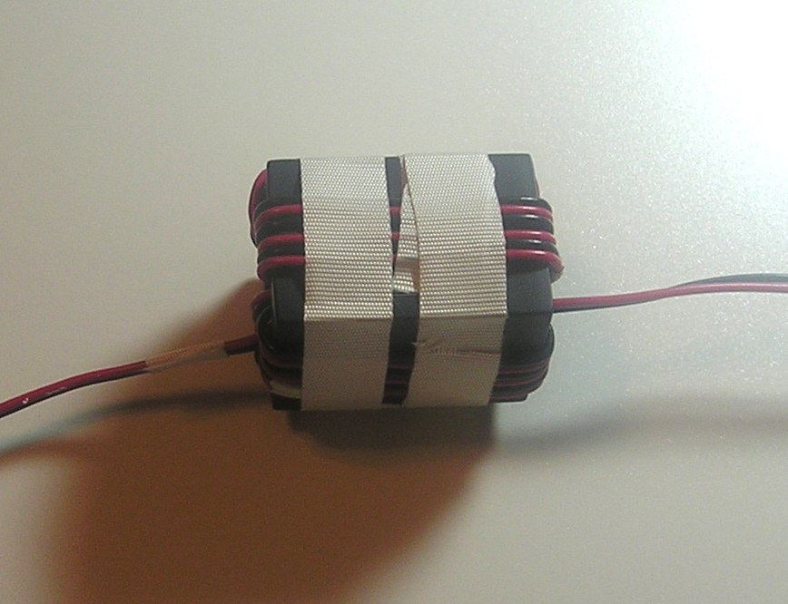
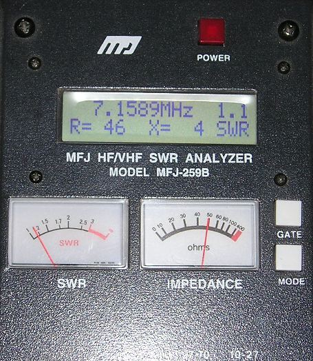
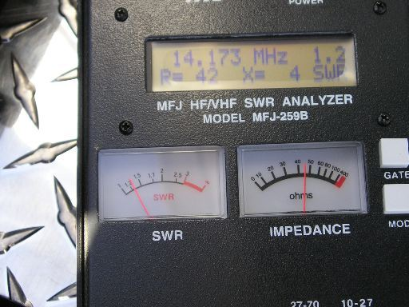

Contents: Basics; Caveats; Coil Adjustment; Why 40 Ohms;
Basics
 This article describes a specific procedure to adjust a shunt matching coil to assure that the input SWR will remain relatively low (≤ 1.6:1) over the operating range of an 80 through 10 meter, remotely-controlled, HF mobile antenna. It also requires an antenna analyzer like the MFJ-259B shown at right. Whatever antenna analyzer is used, it must have an X and R readout. The SWR readout must be ignored, and not relied on until the coil is adjusted properly! Incidentally, handheld analyzers are preferred, to those which require a computer to read out the data.
This article describes a specific procedure to adjust a shunt matching coil to assure that the input SWR will remain relatively low (≤ 1.6:1) over the operating range of an 80 through 10 meter, remotely-controlled, HF mobile antenna. It also requires an antenna analyzer like the MFJ-259B shown at right. Whatever antenna analyzer is used, it must have an X and R readout. The SWR readout must be ignored, and not relied on until the coil is adjusted properly! Incidentally, handheld analyzers are preferred, to those which require a computer to read out the data.
The procedure assumes that the lowest X value readout (may not be exactly zero!) is the actual resonant frequency. Since we're dealing with a less than a laboratory-grade instrument, the lowest X value shown may not be the exact resonate point. However, in this case it is close enough. To make sure we get the best (lowest?) value, a few caveats are in order.
 First, the coax cable between the antenna and the analyzer should be kept as short as practical, and equipped with a common mode choke. This assures that neither the coax cable, nor the presents of common mode current, will affect the measurements. Further, standing close to the antenna, parking atop re-enforced driveways, around well-treed properties, or under overhead power lines should be avoided for the same reason.
First, the coax cable between the antenna and the analyzer should be kept as short as practical, and equipped with a common mode choke. This assures that neither the coax cable, nor the presents of common mode current, will affect the measurements. Further, standing close to the antenna, parking atop re-enforced driveways, around well-treed properties, or under overhead power lines should be avoided for the same reason.
For best results, factory-installed matching coils should be relocated if they're installed close to surrounding sheet metal.
 The coil needs to be ≈1 uH, but the actual value may be between .5 uH and 1.5 uH depending on the actual input impedance of the antenna in question. The coil at left is 1 inch in diameter, has 9 turns, and wound with #14 Thermalese® (enameled) wire. The one on the right is 7 turns, and .75 inches in diameter. The number of coil turns and spacing required (inductive reactance), depends on the quality of the antenna, the mounting location and style, and the amount of ground losses present. But for best results, the finished coil should be between .75 to 1.25 inches ID.
The coil needs to be ≈1 uH, but the actual value may be between .5 uH and 1.5 uH depending on the actual input impedance of the antenna in question. The coil at left is 1 inch in diameter, has 9 turns, and wound with #14 Thermalese® (enameled) wire. The one on the right is 7 turns, and .75 inches in diameter. The number of coil turns and spacing required (inductive reactance), depends on the quality of the antenna, the mounting location and style, and the amount of ground losses present. But for best results, the finished coil should be between .75 to 1.25 inches ID.
☜Return☜
Caveats

The following adjustment procedure assumes you have a properly wound RF choke(s) on the motor leads (right photo), and the reed switch leads if used. The choke(s) must be mounted as close to the base of the antenna as possible, and not inside the vehicle! Remember, any wiring before the choke is part of the antenna, and will radiate.
An improperly wound and/or installed choke, will also affect the input impedance of the antenna. To circumvent this possibility, the choke and control wires to the antenna should be removed before any measurements are made.
Once the coil adjustment is completed, if reattaching the control wires and choke, changes the input impedance, no matter how small the change is, the choke is inadequate! For more information on winding the requisite choke, read the Antenna Controller, and the How To Wind A Choke articles.


If you do the following coil adjustment procedure correctly, you will be rewarded with a relatively low SWR (< 1.6:1) at any resonant point the antenna (80 through 10) can be tuned to. The coil will not need further adjustment unless you change the antenna's length, add a cap hat, or perhaps relocate the antenna.
The photos show the readout of a screwdriver antenna, on 40 meters, without any matching, and after the shunt coil was installed and adjusted (left and right respectively). Results on 80 meters will be similar.
If the impedance of your unmatched antenna measures close to those shown in the right photo, chances are the overall losses are great enough that you don't need any input matching. If that is the case, you need a better antenna, better mounting, or both!
As noted, the number of turns may vary from 7 to 10 turns. The actual number needed depends on a lot of factors; the actual input impedance of the antenna, the size of wire, the overall length of the coil, its diameter, and whether it is insulated or not. The dimensions suggested (≈1 inch long, ≈1 inch in diameter, and 7 to 9 turns) will suffice 98% of the time.
One common adjustment failing is the I'll break it syndrome. Some folks are just too shy about elongating the coil enough to get a decent match. If you're one of these, remember this; all the coil is, is a small piece of enameled wire, anyone can (re)wind in a few moments. It isn't magical, and it isn't critical in any respect. It may indeed end up looking like a funky corkscrew by the time you're through with the adjustment, but that fact alone won't affect the end results. By the way, any motor or alternator rewinding shop will have enough scrap laying around to wind hundreds of coils; a 3 foot length is plenty. Size really isn't important either, but #14 and #12 are the easiest to work with.
There is one important consideration when using an antenna analyzer, and that is broadcast interference (BCI). If you live near an AM or FM broadcast station, or close to a commercial installation, you should check to make sure you do not have BCI. In the case of the MFJ-259B, that's easy to do. With the MFJ-259B connected to your antenna, push the mode switch until the frequency counter displays. If the SWR meter significantly deflects, you probably have BCI. MFJ does sell an optional BCI filter unit for the 259B which eliminates the problem.
In the following steps, it may not be possible to get the X value to equal zero (or very close to it). There are several reasons why this may occur, including the basic accuracy of the instrument in use. Or, you might be adjusting the analyzer to the lowest SWR rather than the lowest X value. Or, the coax between the analyzer and the antenna is too long. It should be less than 18 inches. Or, you might have BC interference as noted above.
☜Return☜
Coil Adjustment
Do yourself a favor, and explicitly follow the adjustment procedure herein. If you do not, here is what will happen: You will not achieve a low SWR over your antenna's band width; You will have antenna controller malfunctions and/or intermittent operation; And, you will become frustrated, no end!
Move the antenna to the 80 meter band. The actual frequency is unimportant. Remove the control leads, and choke as outlined above. Adjust the frequency on the analyzer until the X=Ø, or as close to zero as you can. If you've adjusted the antenna analyzer to the lowest SWR, rather than X=Ø, you've already made a mistake!
Read the R value (not the SWR!). If it is less than 40 ohms, stretch out the coil slightly (1/4 inch at a time!). Readjust the analyzer's frequency so X=Ø once again. If the R value is lower than the first try, squeeze the coil together slightly (1/4 inch at a time!), and try again. Repeat the process until the R reading is about 40 ohms when X=Ø =, or as close to it as you can. This process could take several tries, and must be completed before moving to 40 meters.
After you've adjusted the coil on 80 meters, move the antenna to the 40 meter band. The actual frequency isn't important. Remove the control leads, and choke as outlined above. Adjust the analyzer's frequency until X=Ø, or as close to it you can get (not the lowest SWR!). Read the R value. In most cases, it will be about the same spot as it was on 80 meters. If it is not, it may be necessary to compromise between the two bands. This may require multiple measurements on both bands. If you hit is right the first time, consider yourself lucky!
As the case may be; if you can't stretch the coil apart enough to find a match, take off a turn or two. If you can't collapse it enough, add a turn or two. The requisite number of turns for a one inch diameter coil, will vary between 7 and 9, and the overall length between 1 and 2 inches (.5 uH to 1.5 uH).

Once you've completed the 80 and 40 meter adjustments, move the antenna to the 20 meter band. The actual frequency isn't important. Remove the control leads, and choke as outlined above. Adjust the frequency on the analyzer until X=Ø, or as close to it as you can get (not the lowest SWR!). Read the R value. It will usually be closer to 50 ohms than either 80 or 40 meters, and may actually be slightly higher than 50 ohms. You can check the rest of the bands if you desire, but they'll usually read very close to the 20 meter R value.
If a compromise can't be reached between 80 and 40, or the R reading for 20 meters (and above) is far removed for 50 ohms when Xů, then chances are there is an inadequate ground plane under the antenna (#1 cause), or there is too much shunt capacitance between the antenna (particularly the coil), and the body of the vehicle, or both! The solutions are obvious.
Once you get all done, and discover the SWR at the transceiver end of the coax cable is high (≥1.6:1), the first place to look is at the coax cable, and its connectors. This is easily checked by installing a dummy load on one end, and using the antenna analyzer on the other. It should read virtually 1:1 SWR with no reactance at all.
☜Return☜
Why 40 Ohms?
Someone is bound to ask; why set the shunt matching coil for 40 ohms rather than 50 ohms? Basically, it is a compromise. If you use 50 ohms, you'll find the match on 17 and 15 will be over 80 ohms (>1.7:1 SWR) in most cases. The reason is related to the reactance of the shunt coil (including its distributed capacitance), the antenna's capacitive reactance (in this case), as the frequency changes. Distributed capacitance is also the reason small, closely spaced coils don't work well in this application, especially when they're mounted inside the antenna's mounting bracket.
☜Return☜
Home
 This article describes a specific procedure to adjust a shunt matching coil to assure that the input SWR will remain relatively low (≤ 1.6:1) over the operating range of an 80 through 10 meter, remotely-controlled, HF mobile antenna. It also requires an antenna analyzer like the MFJ-259B shown at right. Whatever antenna analyzer is used, it must have an X and R readout. The SWR readout must be ignored, and not relied on until the coil is adjusted properly! Incidentally, handheld analyzers are preferred, to those which require a computer to read out the data.
This article describes a specific procedure to adjust a shunt matching coil to assure that the input SWR will remain relatively low (≤ 1.6:1) over the operating range of an 80 through 10 meter, remotely-controlled, HF mobile antenna. It also requires an antenna analyzer like the MFJ-259B shown at right. Whatever antenna analyzer is used, it must have an X and R readout. The SWR readout must be ignored, and not relied on until the coil is adjusted properly! Incidentally, handheld analyzers are preferred, to those which require a computer to read out the data.

{kind=link}
{kind=link}
{kind=link}